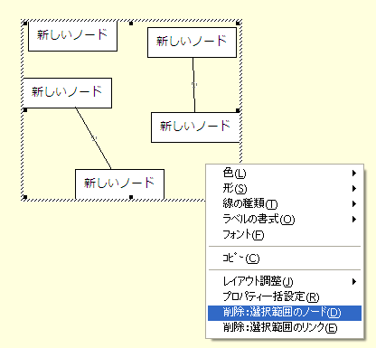
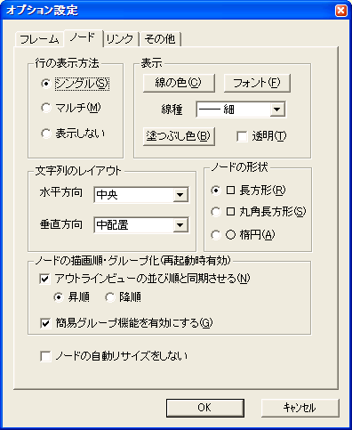

ノードの作成と編集
ノード作成
ノードの作成方法は2種類あります。アウトラインビューで作成する方法と、ネットワークビューで作成する方法です。
アウトラインビューで作成する方法
アウトラインで既存のノードをマウスの右ボタンでクリックするとそのノードが選択状態になり、メニューが出現します。メニューから「下のレベルに追加」で選択したノードの子階層に「新しいノード」というラベルのノードが追加され、ラベルが編集状態になります。ラベルの編集が確定されると対応するノードがネットワークビューにも追加されます。この場合、階層も変わるためネットワークビューはその階層のノードを表示するように切り替わります。追加したノードが選択したノードの最初の子ノードであった場合には、ネットワークビュー上に追加したばかりのノードが１つだけ表示されます。 「同じレベルに追加」を選択すると選択したノードと同じラベルを持つノードが追加され編集状態になります。編集が確定されるとネットワークビューにも対応するノードが追加されます。階層は変わらないため、選択していたノードと同じビューのままノードが追加されます。
ネットワークビューでノードを追加する方法
メニューの「ネットワーク」または、ネットワークビュー上のノードやリンクがない部分で右クリックメニューを出し、「□ 長方形」または「○ 楕円」を選ぶと、カーソルの状態が変わり、ノード追加モードであることを表現します。この状態でネットワークビュー上の任意の位置をクリックするとラベル入力ダイアログが表示されるので、ラベルを入力してＯＫボタンを押すと、クリックで指定した位置に新しいノードが追加されます。この時アウトラインビューにも対応するノードが同じ階層に追加されます。
ノード編集
ノードのラベルを編集したい場合は、アウトラインビュー上、ネットワークビュー上の両方で編集が可能です。
アウトラインビュー上でのノード編集
アウトラインビュー上でノードをクリックする、または、ノード上でマウスの右クリックメニューを出し「編集」を選択するとラベルが編集モードになります。編集が確定するとネットワークビュー上の表示も修正されます。
ネットワークビューでのノード編集
ネットワークビュー上のノードをダブルクリックする、または、ノードを右クリックしてメニューを出し、「ノードのプロパティ」を選択するとプロパティ設定ダイアログが表示されます。このダイアログのラベル編集テキストボックスでラベルを編集してＯＫボタンで確定するとノードのラベルが変わります。またこの時、アウトラインビュー上でもノードが修正されます。
ノードのプロパティ
ノードの大きさや位置は、アウトラインビュー上で直接編集可能です。ノードの色や形などはメニューまたはプロパティ設定ダイアログで設定します。プロパティ設定ダイアログはネットワークビュー上のノードをダブルクリックする、または、ノードを右クリックしてメニューを出し、「ノードのプロパティ」を選択することで出現します。また、ノードを右クリックして現れるメニューで、色、形、線の種類などを個々に設定することもできます。ﾈｯﾄﾜｰｸビュー上でノードを複数選択している場合は選択されているすべてのノードの属性を一括変更できます。
複数ノードの一括編集
複数ノードのプロパティを一括編集するには、ネットワークビューでノードを複数選択してコンテキストメニューまたは書式ツールバーから可能です。
コンテキストメニューで「プロパティ一括設定」を選ぶとノードのプロパティ設定ダイアログで複数のノードの複数のプロパティを編集できます。
複数のノードの色、形、線種などを個別にコンテキストメニューおよび書式設定ツールバーで設定できます。
ノードを追加したときに設定されているフォントや色などのデフォルト値は｢ツール｣の｢オプション設定｣で設定できます。
ノード削除
アウトラインビュー、ネットワークビューでノードを選択してDELキーでノードを削除できます。(メニューからも可能です)
複数のノードを削除するには
ネットワークビューで、複数のノードを選択して、DELキー、または、コンテキストメニューから削除ができます。

ノードを削除するとき、アウトラインビューでそのノード配下にあるノードも削除されますのでご注意ください
ノード設定
作成されるノードにあらかじめ共通のプロパティを持たせたい場合は、ノードのデフォルト設定を使用します。 メニューから「ツール」⇒「オプション」⇒「ノード」タブで、デフォルトのプロパティを指定できます。
